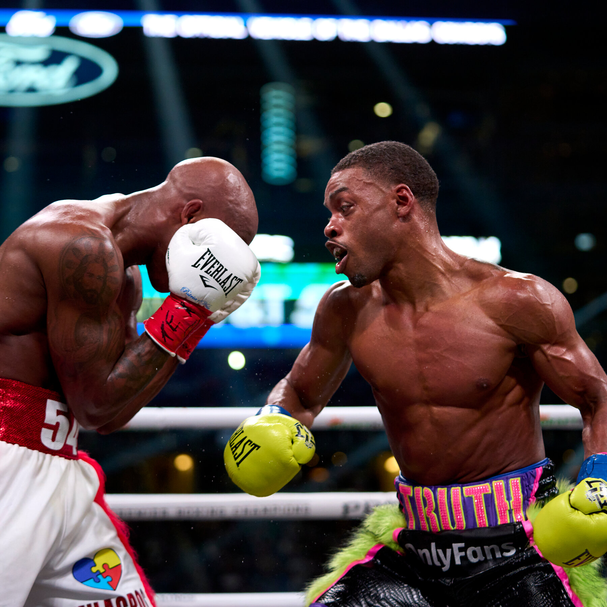

I'm currently a Service Manager for a liquid fertilizer company. In my free time I enjoy these activities.
Boxing
Boxing is my favorite sport to watch and practice. It's a great way to stay in shape and relieve stress.
Gaming
Playing video games in my free time is one of my biggest stress relievers. I've wasted alot of time over the years gaming, so I'm reallocating that time specifically for the Bootcamp. Once I complete the Bootcamp, I'll start back gaming.
Traveling
Visiting new places with my wife is probably my favorite thing to do outside of boxing and gaming. With a new career in tech, the opportunities will be endless for traveling the world.